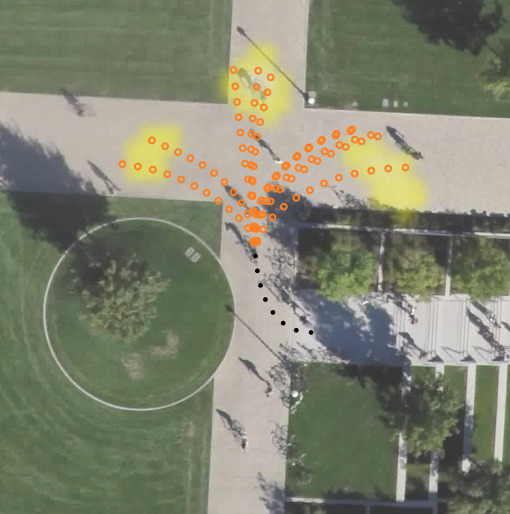
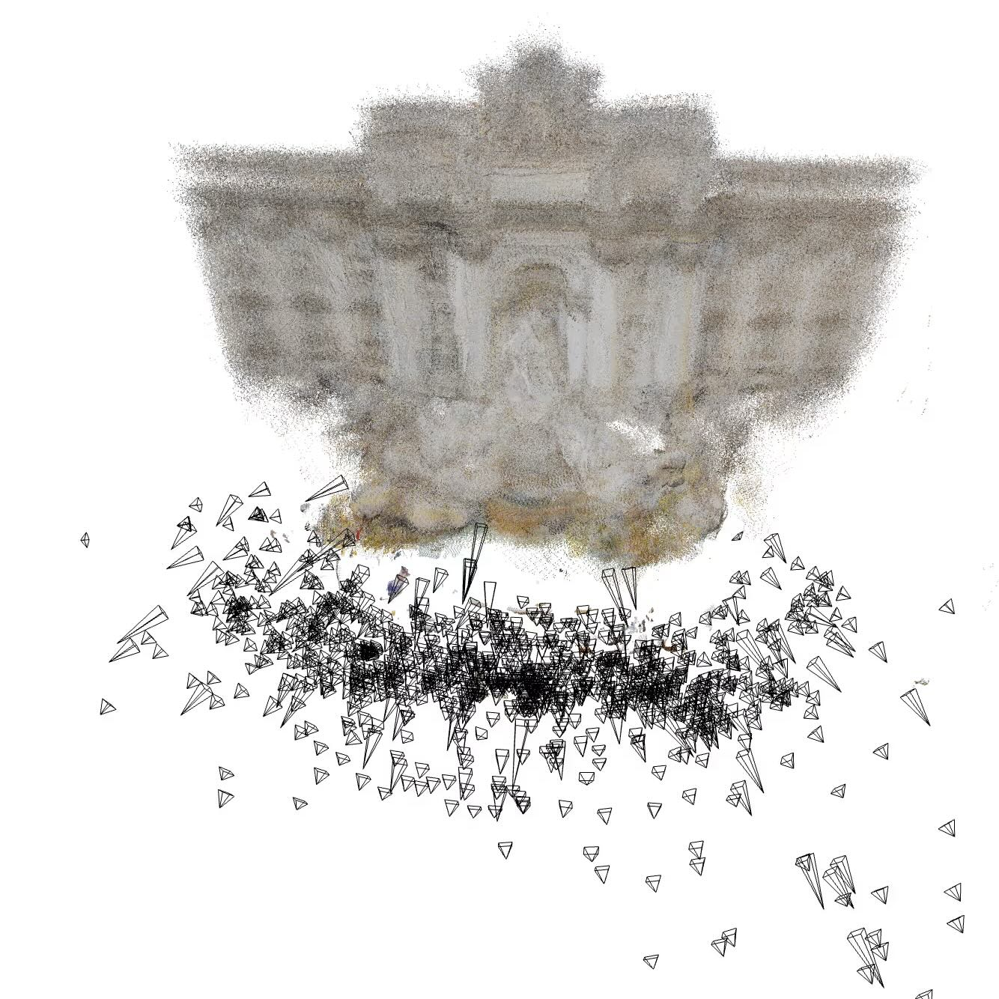
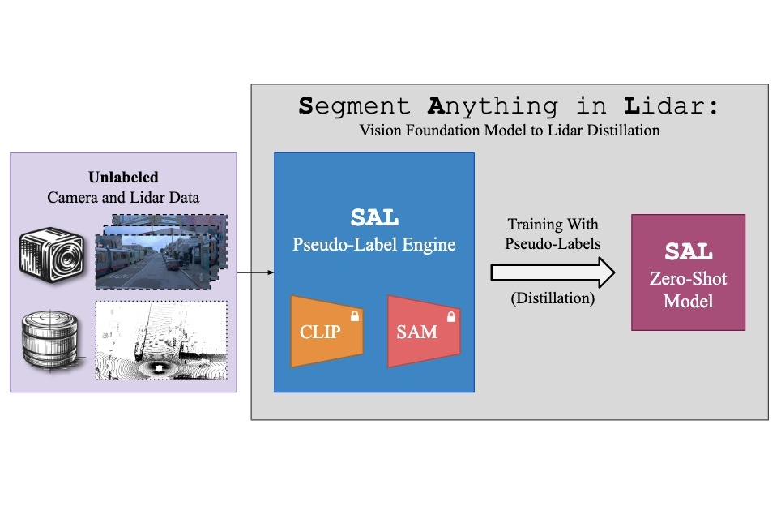
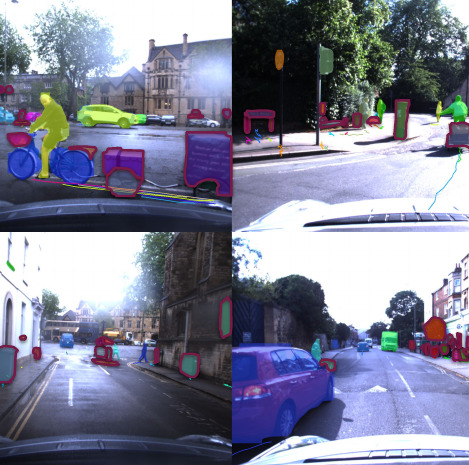

Research
My research focuses on enabling AI systems to robustly understand the dynamic, 3D world from raw sensor streams, such as video and LiDAR. Key areas include learning directly from raw data, tracking and segmenting objects, understanding complex spatiotemporal scenes, and predicting future events in open-world environments. Hover over each topic below to explore related publications.
 Learning From Raw Sensory Data
Learning From Raw Sensory Data
Relevant Papers: Learning From Raw Sensory Data
- Large-Scale Object Mining for Object Discovery from Unlabeled Video (ICRA 2019)
- 4D Generic Video Object Proposals (ICRA 2020)
- Learning to Discover and Detect Objects (NeurIPS 2022)
- Pix2Map: Cross-modal Retrieval for Inferring Street Maps from Images (CVPR 2023)
- What Moves Together Belongs Together (CVPR 2024)
- Better Call SAL: Towards Learning to Segment Anything in Lidar (ECCV 2024)
- Towards Learning to Complete Anything in Lidar (ICML 2025)
 4D Scene Understanding
4D Scene Understanding
 Tracking and Panoptic Perception
Tracking and Panoptic Perception
Relevant Papers: Tracking and Panoptic Perception
- Combined Image- and World-Space Tracking in Traffic Scenes (ICRA 2017)
- Track, then Decide: Category-Agnostic Vision-based Multi-Object Tracking (ICRA 2018)
- MOTS: Multi-Object Tracking and Segmentation (CVPR 2019)
- HOTA: A Higher Order Metric for Evaluating Multi-Object Tracking (IJCV 2020)
- STEP: Segmenting and Tracking Every Pixel (NeurIPS Datasets 2022)
- Opening up Open-World Tracking (CVPR 2022)
- PolarMOT: How far can geometric relations take us in 3D multi-object tracking? (ECCV 2022)
- EagerMOT: 3D Multi-Object Tracking via Sensor Fusion (ICRA 2021)

Forecasting & Behavioral AIRelevant Papers: Forecasting & Behavioral AI
Selected Papers


